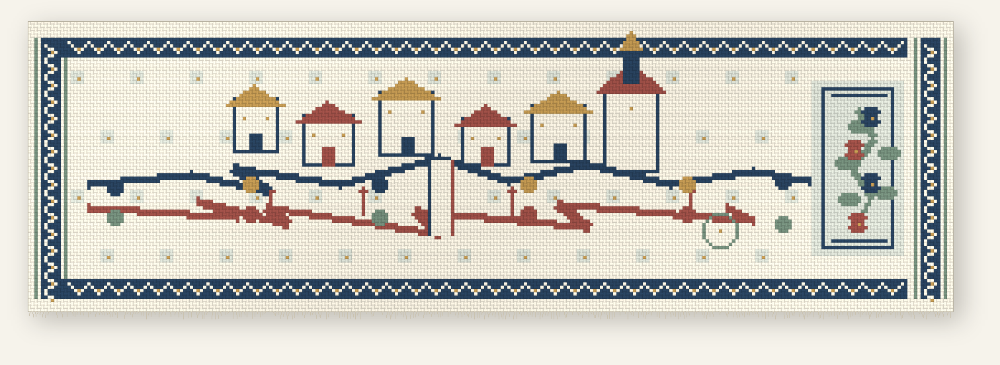

Hilo de Chamizo
The Road Keeps Answering
Coded handloom image · 2026

Object label
Indigo, clay red, leaf green, straw, and cotton white. 280 × 88 crossings, rendered with alternating warp and weft, separate motif islands, bound edges, and loose fringe.
Two lines cross a small imagined town and leave a narrow opening at their meeting. The houses, figures, well, and gate are invented; the cloth begins from the thought of a road as a place where another voice can answer.
This is a coded woven image, not physical muslin and not a documentary view of Chamizo.